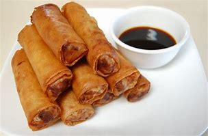
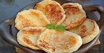
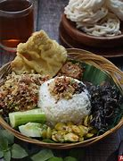
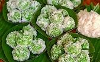
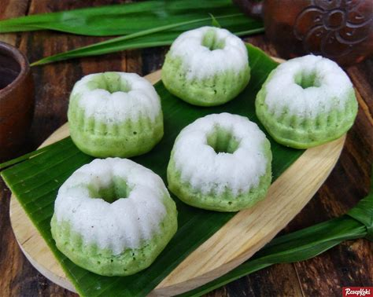
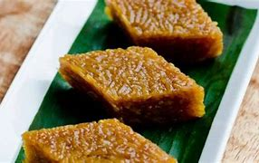
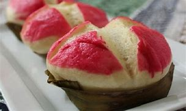
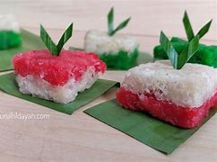
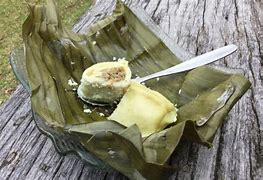
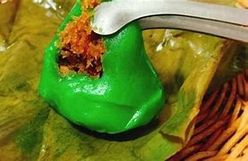

Resep Makanan jawa tengah

Lumpia makan khas jawa tengah yang berhasal dari Semarang
Bahan Untuk membut lumpia
- kulit lumpia
- 2 sendok makan tepung terigu
- 1 sendok makan air
- Rebung
- Putih Telur

Wingko adalah mkanan khas Semarang
Bahan untuk membuat wingko
- 125 gram tepung ketan
- 1 buah kelapa setengah tua, kupas dan parut memanjang
- 1/2 sdt garam
- 1/2 sdt garam
- 100 gram gula pasir

Nasi Megono Berasal Dari Pekalongan
Bahan Untuk membuat nasi megono
- Beras secukup nya
- 1 Bunga kecombrang
- Buah nangka secukup nya
- Cabe merah
- Daun salam Dan Daun Jeruk

klepon berasal dari jawa Tengah
Resep membuat klepon
- Tepung ketan
- Gula jawa
- Kelapa parut
- garam
- santan

Kue putu berasal dari jawa tengah
Resep Membuat kue putu
- Tepung terigu
- Gula
- Telur
- Pandan
- santan

Wajik berasal dari Jawa Tengah
Resep Membuat Wajik
- Beras ketan
- Gula jawa
- Daun Pandan
- Santan
- Gula pasir

Kue moho berasal dari jawa tengah/p>
Resep membuat Kue moho
- Tepung terigu
- Gula pasir
- Telur
- Baking powder
- Air

kue sengkulun berasal dari jawa tengah
Resep kue sengkulun
- Tepung ketan
- kelapa parut
- garam
- vanili
- Gula pasir

Kue mento berasal Dari jawa Tengah
Resep Kue mento
- Tepung terigu
- Telur
- minyak
- Air
- Garam

Mendut berasal Dari jawa Tengah
Resep Mendut
- Tepung ketan
- gram
- kapur sirih
- Gula
- pewarna